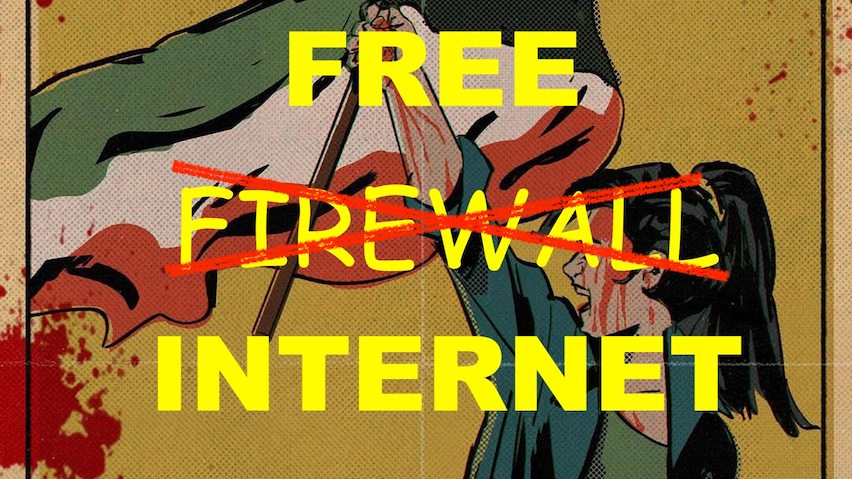

Free Internet for Iran

This service allows you to create a secure SSH tunnel to a socks5 proxy and then access the Free Internet.
SSH Server: @@@SIP@@@ PORT @@@SPORT@@@ (password: proxy)
WINDOWS:
1. Download PuTTY
2. Read the Instructions [in persian]
ANDROID:
1. Download HTTPS Injector/VPN
2. Read the Instructions
LINUX:
1. ssh -D1080 -4 -f -N -p @@@SPORT@@@ proxy@@@@SIP@@@
2. curl -x socks5h://127.0.0.1:1080 ifconfig.me
Documentation:
1. Microsoft Edge
2. Google Chrome
3. Firefox
4. More at https://iq.thc.org
Universal Declaration of Human Rights
"[...] Whereas disregard and contempt for human rights have resulted in barbarous acts which have outraged the conscience of mankind, and the advent of a world in which human beings shall enjoy freedom of speech and belief and freedom from fear and want has been proclaimed as the highest aspiration of the common people.
[..] to rebellion against tyranny and oppression," --United Nations, 1948.
If you are a Linux/Admin please join us on Telegram. We need your help.
https://github.com/hackerschoice/iran-ssh-proxy
https://iq.thc.org/series/iran-illegal-firewall